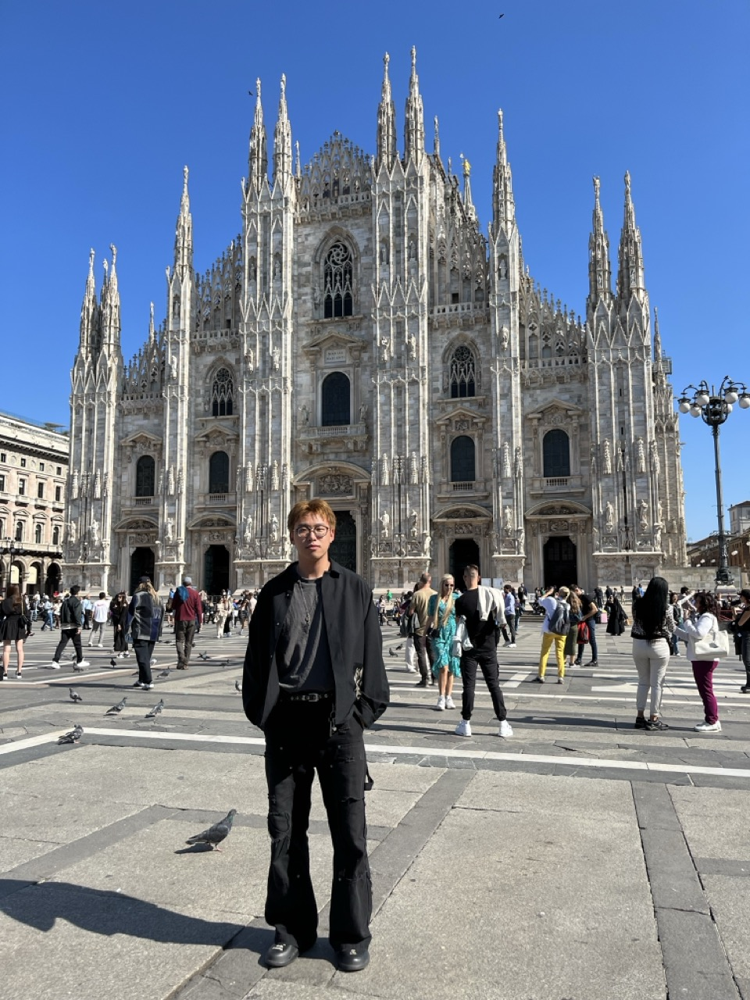

TailSteer: Trajectory-Tail Steering for Drift-Resistant Multi-turn Image Editing
Drift-resistant multi-turn image editing by steering the tail of pretrained editors’ denoising trajectories.
Under review
Second-year Ph.D. Student at MMLab, The Chinese University of Hong Kong
Hi, I am Zixuan Chen. I am a second-year Ph.D. student at the Multimedia Laboratory (MMLab), The Chinese University of Hong Kong (CUHK). I am supervised by Prof. Tianfan Xue.
Prior to that, I received my M.Eng. from Zhejiang University in 2025, supervised by Prof. Zhe-Ming Lu, and my B.E. from the same university in 2022. During my master’s study, I also worked closely with Prof. Zewei He.
My current research interests include generative models and computational photography.
I am always happy to collaborate on exciting research—please feel free to reach out.

Research in generative models and computational photography.
Hover over a thumbnail—or tap it—to reveal the result.
Drift-resistant multi-turn image editing by steering the tail of pretrained editors’ denoising trajectories.
Generative image stitching under large parallax using bi-level 3D projected RoPE.
Efficient high-resolution HDR fusion designed to remain robust under scene motion.
Academic training at CUHK and Zhejiang University.
AUG. 2025 — PRESENT
Ph.D. in Information Engineering
Supervisor: Prof. Tianfan Xue
SEPT. 2022 — MAR. 2025
M.Eng. in Aeronautical and Astronautical Science and Technology
Supervisor: Prof. Zhe-Ming Lu
SEPT. 2018 — JUN. 2022
B.E. in Flight Vehicle Design and Engineering
GPA: 3.86/4.0 · Top 10%